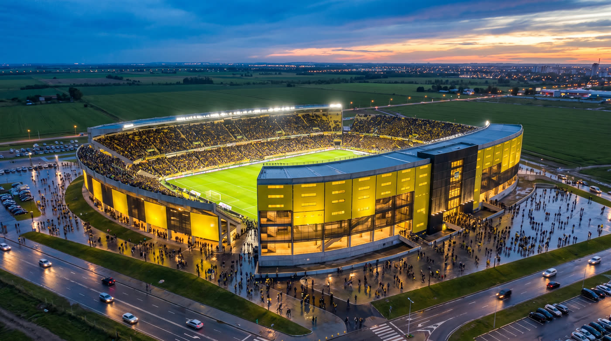
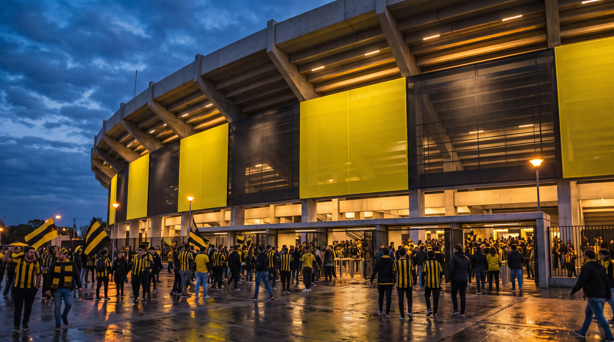
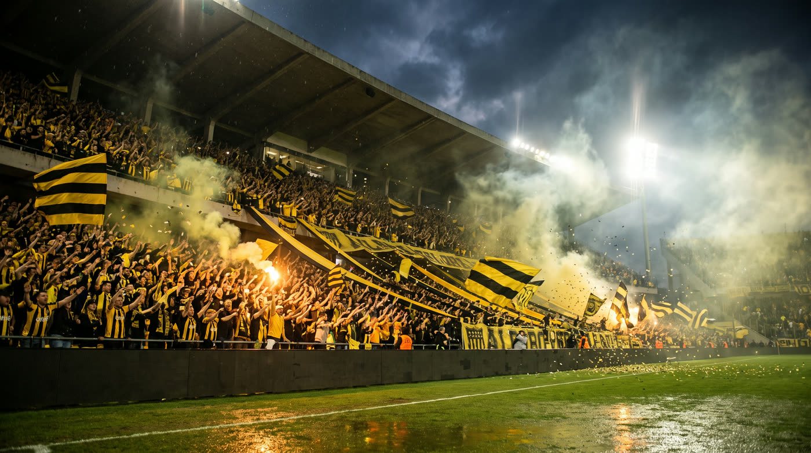

Propuesta · Estadio Campeón del Siglo
La reforma del estadio, en imágenes y en movimiento.
Modelamos el estadio a partir del proyecto, y de ese modelo salen las imágenes y la animación. La inteligencia artificial la usamos encima del render: para sumar lo que es caro o imposible de renderizar — miles de hinchas, banderas, humo, fuegos artificiales — sin tocar la arquitectura. El teaser que acaban de ver es una muestra de ese tono.
Empowered by AIUn adelanto
Cuadros del teaser



El teaser y estas imágenes los hicimos con IA a partir de capturas del modelo, para mostrar el tono. Las imágenes finales salen del modelo 3D completo, como se describe abajo.
El alcance
Qué se produce
Tres entregas encadenadas. El modelo es la base técnica; las imágenes y la animación son lo que se ve y se usa.
Modelado 3D
El estadio completo y su entorno, listo para renderizar desde cualquier ángulo.
- Estadio desde los planos del proyecto: tribunas, cubierta, fachada de paneles, torre y accesos
- El interior: la cancha y las tribunas vistas desde adentro, para poder mostrar el estadio lleno
- Entorno: terreno, caminería, estacionamientos y la avenida, para que el estadio se lea en su lugar
- Materiales e iluminación en tres momentos: día, atardecer y noche de partido
Imágenes
Renders del modelo, imágenes con IA y tomas aéreas con dron: un banco de 15 imágenes para prensa, redes y presentaciones.
- 5 renders desde el modelo — aéreas, peatonales, accesos e interior. Los ángulos se eligen con ustedes
- 10 imágenes impulsadas y generadas por IA a partir de esos renders — con hinchada, banderas, de noche, con lluvia, día de partido
- Tomas aéreas con dron del predio real, con el estadio montado encima — se ve en su lugar exacto, con el entorno verdadero
- Entrega en alta, lista para imprimir, con una selección adaptada a vertical para redes
- Hasta 2 rondas de correcciones
Animación
La presentación del estadio en video, con cámaras que recorren el modelo y tomas con IA como las del teaser.
- 1 pieza principal de 60 a 90 segundos — de la llegada al estadio hasta adentro con la cancha llena
- Recorridos de cámara en el modelo para la arquitectura; tomas generadas con IA para la gente y el ambiente
- Música y diseño sonoro — latidos, hinchada, el rugido de la tribuna
Modelado 3D + 15 imágenes + animación de 60 a 90 segundos, de pago único. Se produce una vez y queda de ustedes.
El proceso
El orden de las cosas
Cada etapa se aprueba antes de pasar a la siguiente, para no producir sobre algo que después hay que rehacer.
Para tener claro
Qué queda fuera
Material de base
Los planos del proyecto los aportan ustedes. No incluye relevamiento ni documentación de arquitectura.
Cambios de proyecto
Las imágenes incluyen hasta dos rondas de correcciones de encuadre, luz y clima. Si cambia el proyecto en sí después de modelado, se cotiza aparte.
Marcas y escudos
El escudo, los sponsors y cualquier marca que aparezca en pantallas o cartelería los aportan ustedes, en vector.